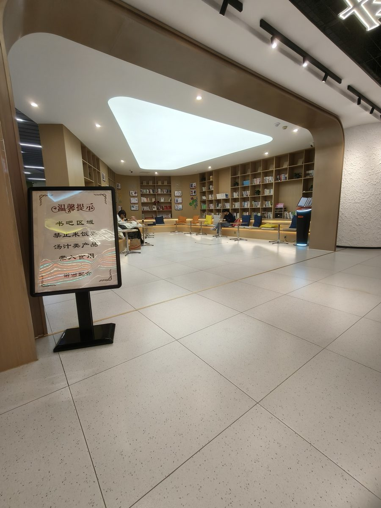
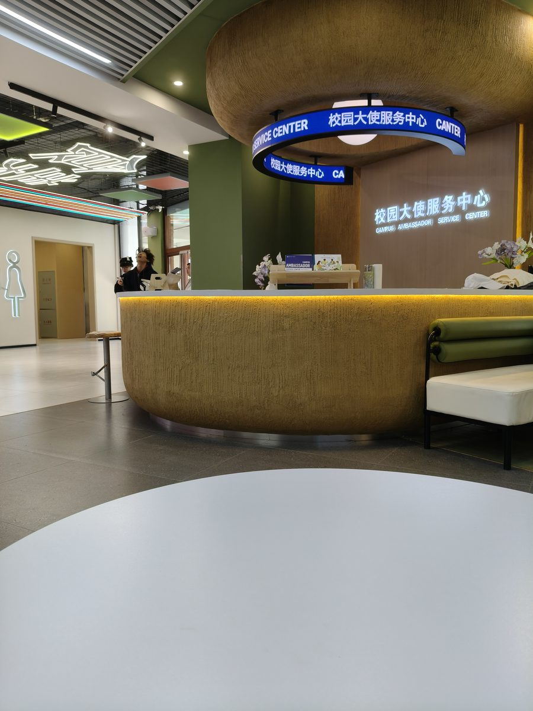
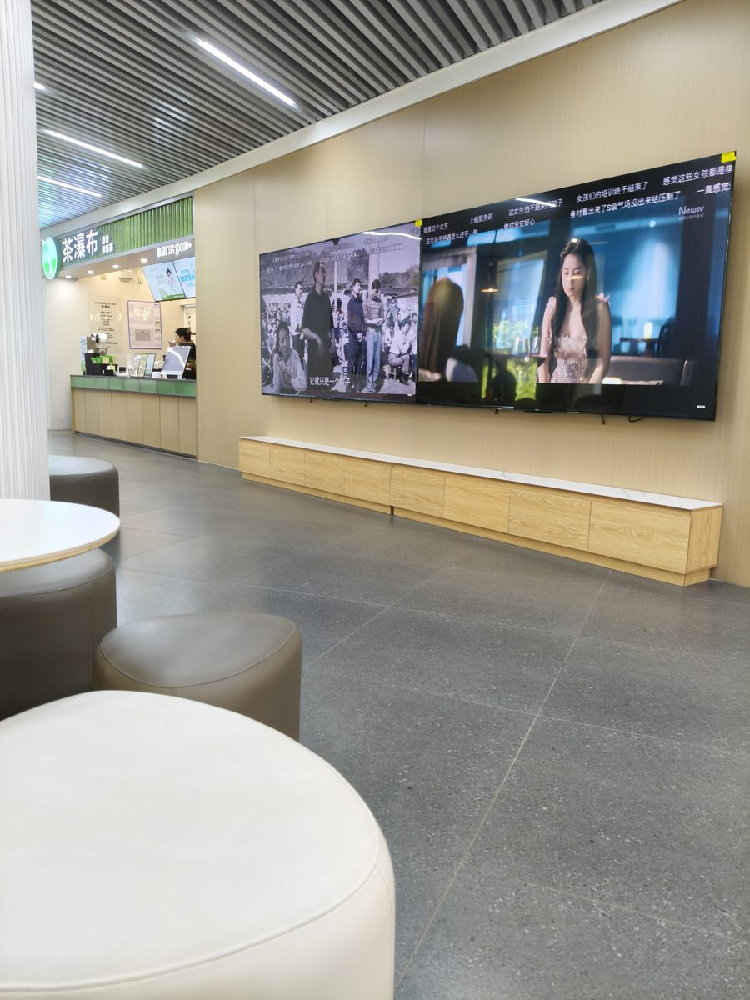

阅读区
Reading Area · 吃学分离
安静的书吧，提供充电插座；严禁带入汤汁类食物，吃学分离，环境清爽。
具体菜品、价格、营业时间与活动以食堂现场公示为准。
CANTEEN MAP
布局参照食堂导视牌；点击铺位即可查看档口实景照片。
地图加载中，请稍候……
ALL STALLS
搜索或按分类筛选，点击卡片查看档口详情与菜单。
没有找到相关档口
换个关键词试试，或点击「全部」查看所有档口。
MORE THAN A CANTEEN
吃饭之外，这里还有书声、服务与闲聊。

Reading Area · 吃学分离
安静的书吧，提供充电插座；严禁带入汤汁类食物，吃学分离，环境清爽。

Service Center · 一站式服务
校园大使驻点，提供失物招领、咨询引导、意见反馈一站式服务。

Communication Area · 开放式社交空间
开放式社交空间，配有电视屏幕和舒适座椅，是课后放松、小组讨论的好去处。
GALLERY
从门头到角落，先看看集市的样子。
NOTICE
以下为占位内容，正式信息以食堂现场公示为准。
新档口即将亮相，敬请期待。开业时间与优惠活动以现场公示为准。
季节性新品筹备中，具体品类与价格以档口现场公示为准。
校园活动策划中，形式与安排确定后将第一时间更新。
FEEDBACK
菜品、服务、环境——你的每条意见，集市都听得到。提交后将由大使服务中心跟进处理。
具体菜品、价格、营业时间与活动以食堂现场公示为准。